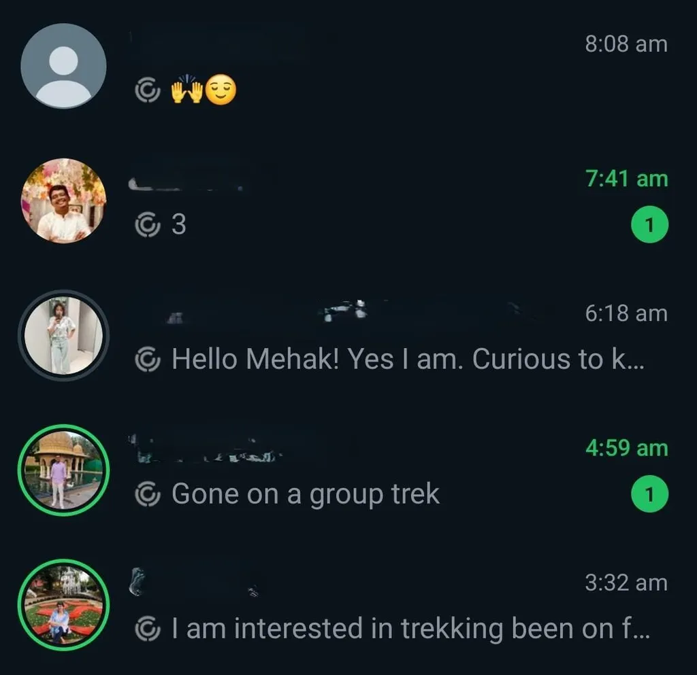
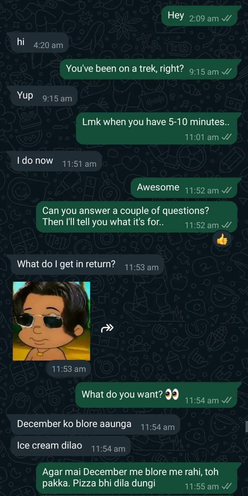
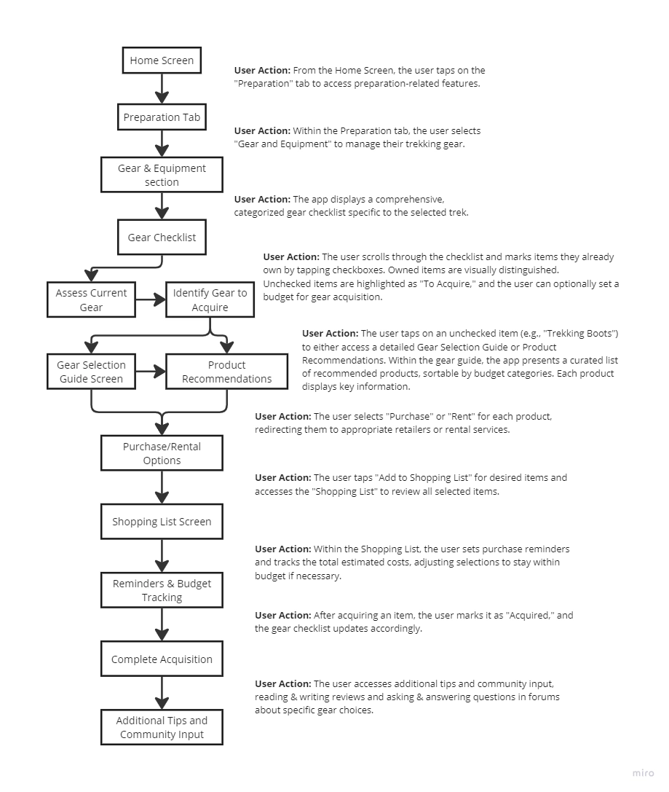
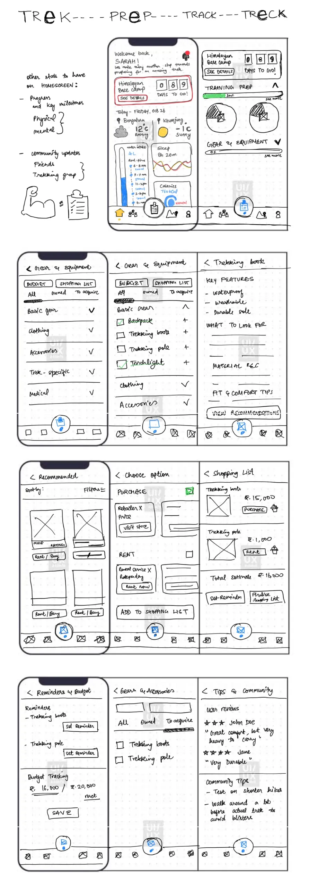

UX Design Challenge · Mobile App · 2024
TReCK — Simplifying Trek Prep
A solo design sprint exploring how to help first-time trekkers prepare — physically, mentally, and logistically — for their first organized trek
The problem
First-time trekkers frequently show up underprepared — not because information doesn't exist, but because it's scattered, generic, and rarely calibrated to their specific trek, fitness level, or timeline. Trekking companies provide minimal guidance beyond a basic gear list and a fitness benchmark like "run 5km in 30 minutes." What that doesn't account for: altitude, backpack weight, terrain type, and the mental demands of a multi-day experience with no mobile network.
The brief asked for a mobile app concept that would help first-time trekkers stay on track with preparation — and one that retained users post-trek by giving them reasons to come back.
"The challenge wasn't lack of trekking information. It was that no single resource understood the user well enough to tell them what they specifically needed to do, and when."
Research approach
Rather than relying solely on the brief, I treated this as a genuine research problem. I ran secondary research into Reddit communities, trekking company fitness guidelines, and existing apps (AllTrails, Komoot, Strava) while simultaneously recruiting primary research participants — before I'd started ideating anything.
11
People responded to outreach via Instagram and WhatsApp stories
6
Participants selected for maximum contrast in experience and context
5+
Secondary sources — platforms, Reddit threads, trekking company guidelines
Participant selection — why these six
I didn't just take the first six people who responded. I selected for variety — specifically to ensure that insights weren't skewed toward one type of trekker or one geographic context. The goal was to surface patterns that held across different experience levels, organizational contexts, and cultural norms around trekking.
2 organized group trips (Kedarkantha + Ladakh biking). Heavily reliant on self-research to fill gaps left by the company. Anxious, over-planner type.
Moderate trek through Indiahikes with strong pre-trek support (Zoom orientation, WhatsApp group, fitness requirement). Still felt physically underprepared.
Easy 1N2D trek via corporate booking. Minimal fitness prep, everything handled by the company. Low-stakes but revealing about comfort expectations.
~10 hikes/year in the US + a moderate-difficult Himalayan trek. Calibrated perspective on where beginners consistently fall short.
First-ever hike in Alaska. No preparation, no prior experience, felt left behind by fitter friends. Most revealing participant on mental and physical unreadiness.
Multiple hikes both booked and self-planned. No prior treks. Mehak herself as a user — surfaced the inconsistency of online information and the underestimation of elevation vs flat walking.


What research revealed
After speaking to all six participants and synthesizing alongside secondary research, I ran an affinity mapping session to identify patterns that held across contexts. Eleven themes emerged. The most important weren't the ones the brief had assumed.
Finding 1
Physical underprepration was universal — but the cause wasn't laziness
Every participant — regardless of fitness level — felt physically underprepared in some way. The consistent culprit wasn't lack of effort. It was that fitness requirements (e.g., "run 5km in 30 minutes") didn't account for what actually makes trekking hard: altitude, backpack weight, terrain inclination, and cumulative days of exertion. Even the experienced US-based trekker found the altitude adjustment taxing despite being the fittest person on the trail.
Nobody had received a training plan calibrated to their specific trek's demands. Most had prepared using general fitness routines that didn't simulate trekking conditions.
Key insight
The gap wasn't motivation — it was translation. Users needed someone to tell them: given your fitness level and this specific trek's demands, here's exactly what to do, and when to start.
Finding 2
Mental preparation didn't happen at all — and nobody flagged it as a gap until mid-trek
No participant had deliberately prepared mentally for their trek. Most hadn't considered it a distinct preparation category until they were on the trail — dealing with demotivation on a difficult ascent, breathlessness anxiety, or the psychological weight of feeling left behind by the group. The US-based beginner described it most clearly: even solid physical preparation wouldn't have addressed the demotivation of an unmanned trail with no clear path and no network.
Secondary research confirmed that mental resilience, breathing techniques for altitude, and realistic expectation-setting were consistently underaddressed by trekking companies.
Key insight
Mental preparation isn't just "staying positive." It's setting realistic expectations, having strategies for demotivation, and knowing what difficult moments will feel like before they happen.
Finding 3
Gear guidance was generic — and the gaps caused real problems
Multiple participants experienced gear-related issues that were entirely preventable: wrong shoes causing blisters and a twisted ankle, a forgotten raincoat leading to hours of discomfort, susceptibility to cold that better layering advice would have prevented. Gear lists existed — but they didn't explain why each item mattered, what to look for when selecting it, or how to break it in before the trek. One participant noted: "Nobody guides you to buy good shoes. A bad shoe can ruin your entire trek — what to look for when you're buying one."
Key insight
A checklist without context is almost useless. Users needed to understand what to look for, not just what to buy — and to know that breaking in gear before the trek was non-negotiable.
Finding 4
Existing apps solved parts of the problem — but nobody had combined them
Participants used Strava for fitness tracking, AllTrails for trail information, Google Maps (offline) for navigation, and WhatsApp groups for pre-trek coordination. The preparation experience was fragmented across four or five tools — none of which communicated with each other or understood the context of an upcoming specific trek. AllTrails' elevation histogram was praised as a genuinely useful mental preparation tool — showing users exactly when climbs would hit before they were on the trail.
Key insight
The opportunity wasn't to replace these tools — it was to be the connective layer that understood the user's specific trek and could draw on all these dimensions simultaneously.
Problem framing
Feature prioritization — MoSCoW
Ideation surfaced over 100 potential features. MoSCoW was used to focus the MVP on what would meaningfully address the core preparation gap — dropping anything that sounded compelling but wasn't validated by research.
Calibrated to trek difficulty, user fitness level, and weeks remaining — not a generic plan
Not just what to bring, but what to look for and how to break it in — grounded in what participants actually got wrong
Articles, guided breathing, realistic testimonials from other trekkers — addressing the gap nobody flagged until they were on the trail
Non-negotiable given every participant mentioned losing network — and several had navigation difficulties because of it
Validated by multiple participants — early group connection reduced anxiety and improved the overall experience
AllTrails' histogram was specifically praised — this was a validated mental preparation tool, not just navigation
First aid for common injuries (blisters, sprains), altitude sickness indicators, emergency contact setup
Serves the retention goal — gives users a reason to return after completing their first trek
None of these were raised by participants — some directly contradict the low-tech reality of trekking environments
Solution — core features mapped to pain points
Personalized training plan: phased program calibrated to trek difficulty, altitude, terrain, and user's current fitness — with a preparation quiz, timeline, and daily reminders
Mental resilience resources: guided breathing exercises, realistic testimonials, articles on demotivation and altitude anxiety — presented before the trek, not as an afterthought
Interactive gear checklist: trek-specific, with selection guidance and break-in reminders — plus gear rental information for first-timers who don't want to invest in gear they may not use again
All-in-one platform: training, trail info, offline maps, gear, community, and safety — in one app that understands the user's specific trek
Pre-trek group communication: connect with fellow trekkers before the trek, share preparation progress, run ice-breaker activities — so the group dynamic starts before the first step
Post-trek recovery, badge system, community contributions, and personalized next-trek suggestions — turning a one-time prep tool into an ongoing trekking companion
Prototyping — gear preparation flow
From the prioritized flows, I selected the gear and equipment preparation journey to prototype — as it represented one of the most consistently painful and preventable pain points across participants.

From trek import → gear checklist generation → selection guidance → packing assistant → break-in reminders. Each step mapped to a validated research finding.
 Initial hand-drawn exploration of the gear checklist, selection guide, and packing assistant screens.
Initial hand-drawn exploration of the gear checklist, selection guide, and packing assistant screens.
What's next
The immediate next step is building out a design system and creating high-fidelity screens for the full gear preparation flow — then running usability testing with first-time trekkers on the core tasks: finding their gear list, understanding selection guidance, and using the packing assistant. A/B testing on how the checklist is structured (categorized vs chronological by what to buy when) would also be worth running.
Reflection
The most important decision I made in this sprint was recruiting before ideating. Having six distinct participant perspectives — including someone who'd had a genuinely bad time because of underpreparation — grounded every feature decision in something real rather than assumed.
The participant who described trekking in Alaska as a beginner, constantly out of breath, feeling left behind, not mentally prepared for demotivation on an unmanned trail — that account shaped the mental preparation module more than any secondary research could have. It made "neglecting mental preparation" a concrete, vivid problem rather than a bullet point.
The biggest limitation was time — 12-15 hours meant depth in research but a single prototyped flow. In a fuller engagement, I'd prototype and test at least the training program and group communication flows, which were the most frequently mentioned pain points across participants.
The preparation gap wasn't about missing information — it was about missing personalization. First-time trekkers don't need more content. They need someone to understand their specific trek, their current fitness, and their timeline — and tell them exactly what to do next.